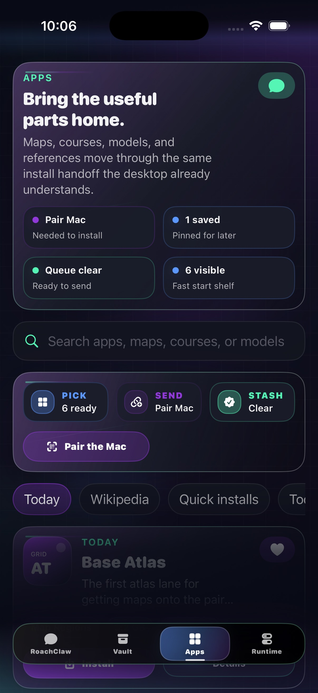
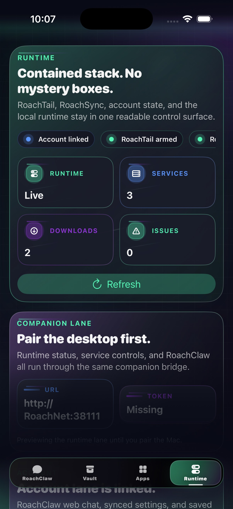

v0.1.5
Chat
Keep the thread going.
Use your paired machine when it is there. Keep the thread moving when it is not, with the same RoachClaw posture and clear account boundaries.
RoachNet iOS
RoachClaw first. Vault reads, runtime checks, app queues, and RoachAtlas GPS stay close without pretending the phone should be the desktop. Control in your pocket, nothing extra.
Unsigned IPA for SideStore or AltStore. Pair it when you want. Stay useful when the Mac is asleep or the network drops.
Screens
One companion shell for chat, vault reads, app queues, runtime checks, and local GPS handoff. Same posture as the desktop lane. Pocket-sized, not toy-sized.
Use your paired machine when it is there. Keep the thread moving when it is not, with the same RoachClaw posture and clear account boundaries.

v0.1.5Browse packs, queue installs, and hand them to the Mac when the bridge comes back. Field shopping, but for useful files.

v0.1.5What is live, what is downloading, what needs attention, and whether the foreground RoachAtlas GPS bridge is actually feeding the Mac.
 v0.1.5
v0.1.5
Vault shelf cards, map and education pack summaries, archive reads, and cleaner media/document handoff on your phone, still readable when the bridge drops.
What’s in 0.1.5
The companion opens quicker, pairs faster, and adds an explicit local GPS bridge for RoachAtlas.
It stays chat-first, keeps runtime state readable, and mirrors the desktop shell closely enough that handoff feels familiar.
Install
Add the shared source or use the IPA. Same build, two clean sideload lanes.
Both routes land the same companion build. The source is cleaner. The IPA is there when you need the direct file.
Add the RoachNet source in SideStore, or download the IPA and share it to SideStore to install.
Open this page on your iPhone or iPad, or AirDrop the IPA first.
The shared AltSource points at the current unsigned IPA and keeps the source repo in one place, where future-you can find it.
Add the same RoachNet source in AltStore, or download the IPA and import it from Files.
Open this page on your iPhone or iPad, or AirDrop the IPA first.
Pairing
The desktop still owns the models, vault, installs, and secure network host. The phone stays quick because it is a companion, not a second desktop.
The secure bridge belongs to the desktop runtime. The phone just needs a fast path in and a clean fallback when the machine goes dark.
https://roachnet.roachtail is the front door.
https://roachnet.roachtail or scan the QR from the desktop shell.